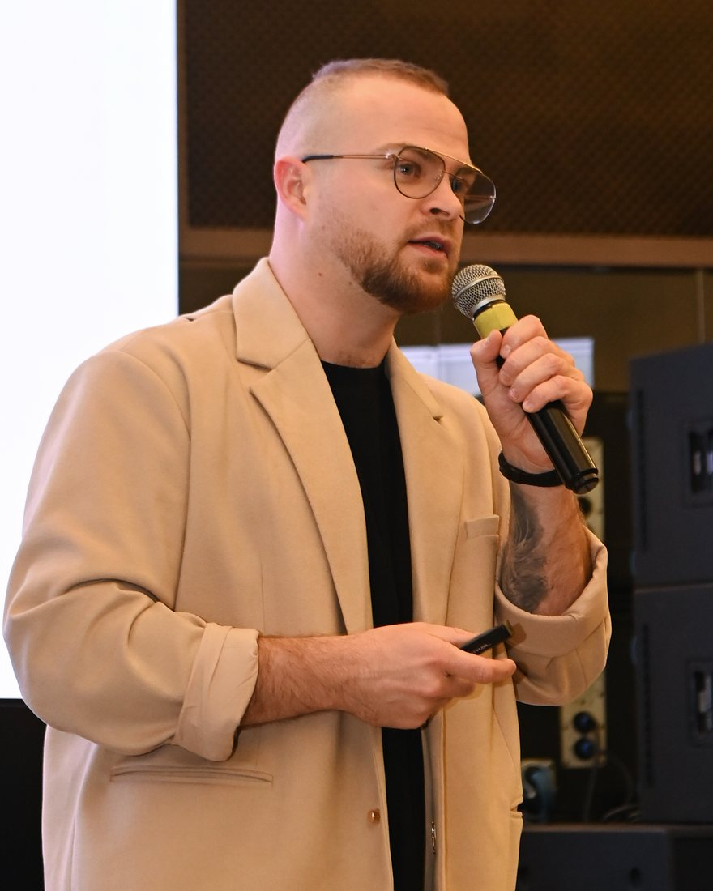
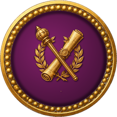
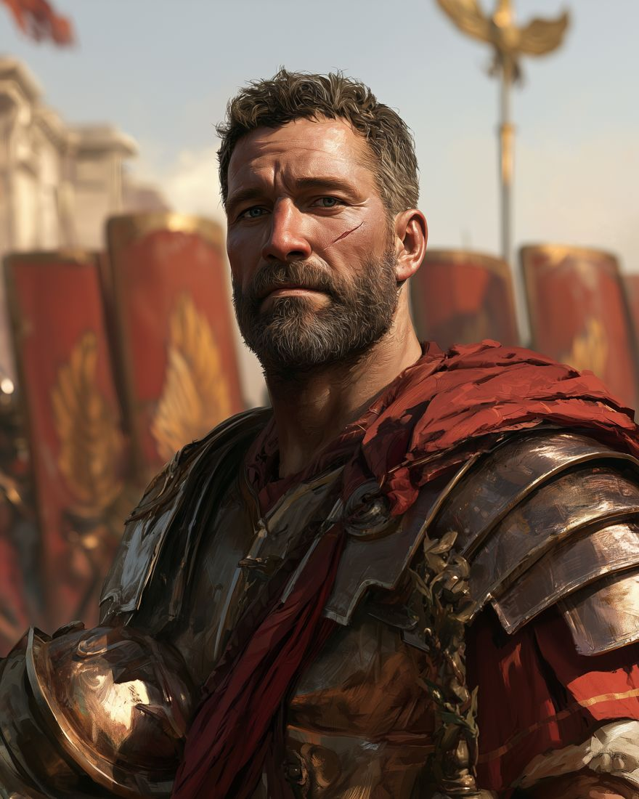

Отношение к коммуникациям как к искусству
Думаю, у вас такое тоже было: хорошая идея и добрые намерения, но вас не слушают. Перебивают, не так понимают и спорят с тем, чего вы не говорили. А сколько бытовых ссор начинается со слов «я этого не говорил» и «я имел в виду другое»?
А бывало так: общение заканчивается, а вы долго прокручиваете разговор и понимаете, что сказали не то и не так, как хотели бы. И в итоге согласились на условия, которые вас не устраивали, промолчали там, где нужно было говорить, или ушли с чувством, что вас аккуратно переиграли.
Это не слабость характера и не невнимательность. Фундаментально у большинства людей некорректное отношение к коммуникациям как к предмету. Дело в том, что получение выдающихся результатов в любой сфере доступно, только если вы уделяете внимание развитию в этой сфере и растете выше среднестатистического уровня.
Поясню, что я имею в виду.
Представьте, что против профессионального бойца, оттачивающего каждый удар тысячи раз, на ринг ставят человека из далекой глубинки, который не имеет даже теоретических знаний о спортивных единоборствах. Занятное было бы зрелище, правда? Жаль, что недолгое.
Едва ли мы способны представить человека в современном мире, который не понимает, что любому спортивному мастерству нужно обучаться, чтобы побеждать. А всё потому, что в нас укоренено корректное понимание предмета: спорт — это серьёзное занятие, в спорте нужны тренер, программа и дисциплина, чтобы побеждать. В то же время спорт — это ещё и искусство, потому что суть спорта выходит далеко за рамки грубой физической силы и победы в поединке. Исторически и философски в спорте заложены принципы, которые роднят его с живописью, музыкой или архитектурой.
Но к коммуникациям так относятся лишь немногие.
Канадский культуролог и философ Маршалл Маклюэн сказал: «Человек живёт в океане коммуникаций так же, как рыба живёт в воде». От качества коммуникаций зависит всё в нашей жизни: уровень отношений с людьми, самоуважение, финансовое состояние и даже здоровье.
Наверняка у вас есть знакомые, которые уделяют какому-либо виду спорта регулярное внимание: развиваются физически, оттачивают спортивные приёмы, применяют различные программы и диеты.
Но много ли вы знаете людей, которые системно и осознанно развивают свои навыки коммуникации? А ведь от этого зависит, ни много ни мало, наша жизнь: как нас услышат, как нас поймут, что мы получим, каких результатов добьемся.
Лишь малая часть людей корректно относится к коммуникациям и видит в диалоге нечто большее, чем общение двух людей — искусство общения, освоение которого способно буквально преобразить нашу жизнь.
Ну и, наконец, стоит признать, что самый высокооплачиваемый навык в мире — умение коммуницировать. На нём держатся продажи, карьера, лидерство, семья. И при этом так мало людей осознанно в этом навыке развиваются, и совсем немногие могут сказать, что имеют понятную и простую систему, по которой они в этом навыке растут.
Эта книга — мой ответ на эту проблему.

Мой путь. Как были созданы Карты влияния
Я не родился переговорщиком. Долгое время я был его полной противоположностью: выходил из разговоров с ощущением собственной глупости, соглашался на условия, которые потом сам не мог себе объяснить.
Да и жизненный старт мой был вполне обычным: моим первым местом работы после медицинского колледжа стал салон красоты в качестве специалиста по массажу — и я очень быстро понял, что если я хочу заработать деньги на жизнь, одного мастерства мало: мне нужно научиться убедительно рассказывать клиентам салона о своей услуге и продвигать себя как специалиста.
Тогда я впервые начал изучать маркетинг и продажи — и эти темы захватили моё внимание.
Я коллекционировал приёмы
Моё дело развивалось параллельно тому, как я рос в понимании того, как общаться с людьми и влиять на принимаемые ими решения: сначала свой массажный кабинет, затем издательство журнала и маркетинговая компания, затем сеть салонов массажа, а потом инвестиционная компания и строительство загородных отелей.
Параллельно бизнесу моей страстью всегда было исследование темы коммуникаций, маркетинга, продаж и влияния: десятки книг, сотни часов тренингов и, конечно, практика.
Моими учителями на этом пути были такие специалисты с мировым именем, как Роберт Чалдини, Нил Рэкхем, Дэниел Канеман, Крис Восс, Роджер Фишер, Уильям Юри, Джим Кэмп, Джордан Белфорт, Гэри Юкл, Николя Геген, Клод Хопкинс, Стивен Кови, Роберт Грин, Сергей Азимов, Игорь Рызов, Максим Батырев и другие.
У каждого я брал только то, что выдержало проверку делом.
Знания и накопленный опыт в области коммуникаций и бизнеса дали результаты, которые я смело могу предъявить в доказательство того, что моя система и мировоззрение работают:
- В качестве партнера по масштабированию и коммерческому блоку я развил сеть из 43 салонов массажа за 3 года;
- Девелоперский проект в туристической сфере, где я занимался направлением финансирования, привлек инвестиции в размере 12 млн долларов в строительство загородных отелей, где я также выступал соинвестором, создавал концепции природных отелей и участвовал в выстраивании управления;
- Я заключил партнёрство с крупнейшим производителем продукции для здоровья и за 4 года исключительно через коммуникации развил сеть из 300 партнёров в 35 странах мира;
- Сотни часов в роли ментора, тренера по коммуникациям и бизнес-консультанта.
За каждым из этих результатов — тысячи проведённых переговоров и примененных на практике приемов.
Свой опыт я передавал на обучениях для своих сотрудников, клиентов и партнеров. Я выстраивал свою систему из простых в применении и повторении приёмов, которые назвал «Карты влияния» — потому что они были написаны на карточках, которые мы разыгрывали в двойках и тройках.
Со временем приёмов стало так много, что возникла необходимость их группировать. Я увидел закономерности: одни действовали через эмоции, другие — через статус и власть, третьи — через рациональность и аргументы.
Так появились пять колод карт с техниками речевого влияния.
Система работает
Я начал делиться методиками на тренингах — и увидел отклик, которого не ожидал. Люди начали получать результаты, которые впечатляли даже меня. Даже если это были простые житейские победы — меня это радовало, потому что именно такие небольшие, но заметные изменения на дистанции действительно способны изменить человеку жизнь. Участники делились, что:
- становились увереннее, потому что знали, что сказать;
- без страха выходили на сцену и держали зал;
- заводили блоги и переставали стесняться камеры;
- впервые продавали свои продукты и уходили из найма;
- договаривались о повышении с руководством;
- меньше ссорились с близкими по пустякам и начали договариваться.
Так я увидел, что моя система «Карты влияния» работает не только у меня.
Применять техники влияния не равно манипулировать
Когда я говорю о приёмах влияния, часто слышу одно и то же. Кто-то считает это манипуляциями. Кто-то — шарлатанством. Кто-то — умением продавать людям то, что им не нужно, за деньги, которых у них нет.
Я понимаю это отношение, потому что был период, когда я считал так же. Слава богу, мне повезло с учителями, и этот период был коротким!
Самое главное, что я понял: разница между влиянием и манипуляцией кроется в прозрачности намерений, уважении к личности другого человека и степени свободы выбора, которую вы ему оставляете.
Разделение здесь может выглядеть так:
- Влияние — открытое честное предъявление своей позиции, аргументов, ценностей или авторитета. Человек видит ваши мотивы и цели. Он понимает, почему вы склоняете его к принятию решения, и у него сохраняется возможность согласиться или аргументированно отказаться. Влияние апеллирует к логике, фактам, общим интересам или эмоциональному резонансу, без сокрытия важных для принятия решения факторов.
- Манипуляция — скрытое завуалированное управление поведением другого человека в личных интересах манипулятора. Истинные цели в манипуляциях маскируются. Манипулятор бьет по уязвимым точкам: вызывает чувство вины, стыда, страха, играет на эго или использует когнитивные искажения. Жертва манипуляции искренне думает, что принимает решение сама, хотя на самом деле её провели по заранее заготовленному коридору.
А если совсем по-простому: манипуляция ведёт человека туда, где хорошо только манипулятору. Влияние — туда, где хорошо обоим. Долгий бизнес, надёжное партнёрство, крепкая дружба и наполненные любовью отношения строятся только на втором.
Моя миссия — развитие в людях культуры осознанного диалога
Я хочу, чтобы как можно больше людей понимали три вещи: что они говорят, зачем говорят и какой результат хотят получить от своих слов. И чтобы умели слушать своего собеседника и слышать то, что сказано за его словами.
Часто у человека хорошие мысли и позитивные намерения, но он говорит так, что его не готовы слушать. Из-за этого люди ссорятся, теряют сделки и становятся чужими друг другу. Не потому, что они плохие сами по себе, а потому, что не умеют осознанно говорить и осознанно слышать.
Моя система помогает моим ученикам и клиентам начать видеть коммуникацию как карточную игру. Когда вы в общении начинаете видеть карты и приёмы, вы перестаёте реагировать эмоционально. Вы начинаете думать, какую карту разыграть, и замечаете, когда карту разыграли против вас. Это и делает вас осознанным, интересным и вдумчивым собеседником.
Желаю вам успешного пути в изучении великого искусства влияния и надеюсь, что моя книга и система вам в этом помогут!
Почему игра?
Все люди внутри — всё ещё дети. Лучше всего мы учимся, когда играем: не заучиваем правила, а пробуем, ошибаемся и пробуем снова. В игре ошибка ничего не стоит, а в жизни она стоит сделки, повышения или отношений. Поэтому учиться лучше не на реальной жизни, а на игровых увлекательных сценариях в поддерживающем окружении единомышленников.
Чтобы научиться осознанному диалогу, нужна система, положенная на игру. Поэтому приёмы в моей методологии стали картами, группы — колодами, а вокруг них родился целый мир. В этом и состоит моя задача: сделать обучение коммуникациям таким, чтобы в него хотелось играть.
Вечный город
Почему Рим
Я выбрал оформление моей методологии в стиле Древнего Рима не случайно. Рим стал центром мира не только силой своей армии. В нём власть добывали словом: речами в сенате, спорами в судах, союзами семей и сделками купцов. Именно римляне сделали риторику наукой, а их язык до сих пор звучит в праве, дипломатии и девизах. В игре вы встретите много отсылок к реальным фактам римской истории, имперским правилам, и даже карты имеют второе название на латыни. В древней римской риторике есть всё, что есть в любом разговоре сегодня: статус, торг, доверие, давление и интриги.
Благодаря беспрецедентной сети дорог в Римской империи, какую бы дорогу вы ни выбрали, вы окажетесь в Риме. Отсюда известное выражение «Все дороги ведут в Рим».
За этим высказыванием стоит не только исторический, но и философский смысл. У каждой проблемы есть множество решений и нет единого правильного, но все «дороги» способны привести вас к вашей цели. Я взял эту метафору и приложил её к теме коммуникаций и влияния: есть несколько игральных колод и множество приёмов, и к цели можно прийти бесчисленным количеством дорог. Для вас важен не столько выбор конкретной «дороги» (того самого приёма), сколько выбор цели — вашего личного «Рима», куда вы стремитесь. Поэтому на тренингах мы начинаем именно с этого.
Итак, путник.
Добро пожаловать в Вечный город, прообразом которого стал Великий Рим.
Девиз города — Non vi, sed verbo: «Не силой, а словом». Он высечен на Золотом камне.
Золотой камень
В сердце настоящего Рима стояла золочёная колонна — Золотой камень, или Milliarium Aureum. От него считали расстояния до края империи и до каждой провинции. Это был тот самый «нулевой километр»: символ того, что все дороги сходятся в одной точке.
Согласно легенде нашего Вечного города, каждый год Правитель города (Консул) собирает совет, и имена советников высекают на Золотом камне. Имя на камне означает власть влиять на решения города весь следующий год.
Цель игры — заключить с Городом и Консулом сделку, чтобы оказаться в Городском совете, символом чего будет ваше имя, высеченное на Золотом камне.
В жизни каждого из нас свой Золотой камень: сделка, должность, признание, согласие в семье. И к нему ведут все наши мысли, планы, мечты, разговоры и действия. Не спешите читать дальше — подумайте об этом прямо сейчас. Ответьте себе на вопрос: если бы я мог загадать всего одно желание, которое бы точно исполнилось в моей жизни в течение этого года — что бы это было? Моя рекомендация: не переходите к чтению дальше, пока не запишете свой ответ.
Это и есть ваш «Золотой камень» — то, ради чего вам стоит внимательно прочитать эту книгу и исследовать эту систему.
Как устроен мир
Завтра в Вечном городе большой праздник — Золотой камень скрепляют печатью. До наступления ночи Правление города должно решить, чьи имена будут высечены на камне.
В вашей жизни это — ограничение времени, которое свойственно всем действительно важным вещам.
Собеседование длится час. Встреча с инвестором занимает двадцать минут. На первое впечатление у вас несколько секунд. Второго шанса чаще всего не будет: решение принимают сейчас, на основании того, что вы успели сказать.
Можно знать правильные слова и вспомнить их вечером, когда дверь уже закрылась. И на Золотом камне города высечены чужие имена.
Поэтому в игре у вас всегда есть ограничение времени и ходов. Это правило учит главному: говорить нужные слова вовремя, пока решение ещё не принято.
Консул города
Правит Вечным городом Консул Лу́ций Авре́лий. У дверей дома Консула в этот день собралось множество просителей с предложениями о торговых сделках, новых законах, союзах и защите города. Ваша цель на игру — убедить Консула в том, что ваше предложение действительно будет ценно ему и городу, чтобы попасть в Совет и увековечить свое имя на Золотом камне.
Исторически Консул — высшая должность Римской республики. Каждый год горожане выбирали двух консулов, и на этот год они становились главными людьми в государстве.
Консул председательствовал в сенате и предлагал законы, командовал армией, принимал послов и просителей, решал споры.
Власть консула была огромной, но короткой: ровно один год. Год даже называли по именам консулов, и их имена навсегда оставались в истории Рима.
Поэтому консулу было важно всё, о чём эта книга. Он получил власть словом: чтобы стать консулом, нужно было убедить тысячи горожан. Он держал её словом: каждый день к нему шли с предложениями, союзами и интригами, и он должен был отличать полезное городу от красивых речей. А через год его оценивали по делам.
Девиз Консула мы взяли у Цицерона, который сам был консулом: Salus populi suprema lex — «Благо народа — высший закон». Консул слушает не того, кто громче, а того, чьё предложение полезнее городу. Таким он остался и в нашем Вечном городе.
В вашей жизни Консул — это руководитель, собственник бизнеса, инвестор. Тот, кто ставит свою подпись и принимает значимое для вас решение. Таким людям важны не красивые слова, а та реальная польза, которую они увидят или не увидят за ними.
Хранительница печати
Хранительница печати и правая рука Консула — Евдокия. К Консулу не попасть, минуя её. Вашей первой задачей будет убедить Евдокию в том, что ей, Консулу и Городу выгодна ваша с Консулом встреча. От решения Евдокии зависит, откроются ли вам двери к Консулу.
У Евдокии есть исторический прообраз — номенкла́тор (лат. nomenclator — «называющий имена»). В Риме так называли помощника знатного человека. Его задачи: каждое утро встречать просителей у дверей дома и объявлять хозяину, кто пришёл; знать в лицо и по имени всех важных людей города и помнить, кто чем занимается и чего хочет; сопровождать хозяина на улицах и тихо подсказывать имена встречных — чтобы тот приветствовал каждого лично.
Номенклатор ничего не решал сам, но через него проходил каждый, кто хотел попасть к тому, кто решает.
Её девиз — Audio, video, iudico: «Слушаю, вижу, сужу».
Евдокия в реальной жизни — прообраз внимательного собеседника, которому важно понять ваши истинные мотивы и то, насколько ваше предложение и вы сами в принципе интересны, стоит ли тратить на вас время. Например, в продажах это секретарь или помощник руководителя.
Пять фракций — пять колод. Как найти свою
По моей методологии в любом разговоре звучат пять языков, и каждый влияет на решение.
Язык статуса отвечает на вопрос «Почему вас стоит слушать?». Сюда входят опыт, результаты, рекомендации, уверенная манера и порядок в словах. Люди легче соглашаются с тем, кого считают весомым.
Язык выгоды отвечает на вопрос «Что я получу?». Убеждает не ваше «мне надо», а их интерес: деньги, время, спокойствие, признание. На этом языке говорят о результате для собеседника.
Язык доверия отвечает на вопрос «Можно ли вам верить?». Это внимание, честность, общие ценности, умение дать первым. Без доверия даже самое выгодное предложение звучит как подвох.
Язык давления отвечает на вопрос «Насколько вы твёрды?». Он про границы, паузы, темп речи и готовность сказать «нет». Это не агрессия, а спокойная сила, о которую ломается чужой напор.
Язык ловушек звучит как обычная речь, но цель у него скрытая. Это подмена условий, навязанная вина, снисходительный тон. Вы должны его изучить для того, чтобы слышать, когда на нём говорят с вами, и правильным образом ответить. Не ответили на один из этих вопросов — и самый сильный аргумент не сработает.

СтатусПочему вас стоит слушать?У каждого есть своя колода
Каждый человек по привычке играет одной колодой больше, чем остальными. Один давит статусом, другой считает выгоду, третий очаровывает, четвёртый идёт напролом, пятый манипулирует. Пока обстоятельства подходят под вашу колоду, вы выигрываете. Когда нужна другая — проигрываете и не понимаете почему.
У колод есть три задачи:
- Найти свою главную колоду и играть ею осознанно, а не по привычке.
- Защититься от чужих карт: узнавать, когда собеседник давит статусом или выгодой, и выстраивать линию защиты своих интересов.
- Добавить карты из других колод как вспомогательные: сильный игрок сплетает карты разных колод в одну речь.
Как читать дальше
Каждая глава о колоде устроена одинаково:
- на чём держится колода, когда она сильна и когда подводит;
- ролевые модели — известные люди и герои фильмов, у которых эта колода главная, и их любимые карты;
- три карты-примера: как разыграть и как защититься;
- в конце — что ещё есть в колоде и где её отработать.
Пока читаете, спрашивайте себя: в какой колоде я узнаю себя? А какой мне не хватает?
Фракция «Патриции»: Статус
Nomen est omen — «Имя есть знамение»
Люди решают, верить ли вам, раньше, чем вникают в ваши аргументы. Колода Статуса отвечает на вопрос «почему я должен тебя слушать?»: имя, опыт, порядок, спокойная уверенность и даже внешний вид.
Когда сильна: первая встреча, выступление, самопрезентация, разговор с тем, кто выше вас по иерархии.
Когда подводит: статус без тепла звучит как высокомерие, а статус без фактов — как хвастовство.
Ролевые модели
Никогда не суетится, готов встать и уйти, отвечает на давление спокойной уверенностью
Сам задавал повестку презентаций и объяснял миру, как должен выглядеть продукт
Одно тихое слово весит больше, чем чужой крик; её мнение закрывает спор
Величайший оратор Рима: строил речи на фактах, законе и прецедентах
Авторитет
Auctoritasаукто́ритас — «вес мнения»Мы верим не словам, а тому, кто их говорит
Соседка советует вам витамины — вы вежливо киваете и забываете. Тот же совет даёт врач в белом халате — вы идёте в аптеку. Слова одинаковые. Вес разный.
В 1966 году в американской больнице медсёстрам звонил незнакомый «доктор Смит» и велел срочно ввести пациенту лекарство — вдвое больше дозы, указанной на упаковке. Правила запрещали принимать назначения по телефону. Из 22 медсестёр 21 пошла выполнять, её остановили у палаты. Этого врача никто не видел: хватило уверенного голоса и слова «доктор».
Агентство недвижимости подняло продажи одной фразой. Администратор стала соединять клиентов с агентом так: «По аренде вам поможет Сандра — у неё пятнадцать лет опыта с такими объектами». Встреч стало больше на 20%, подписанных договоров — на 15%. Регалии у Сандры были и раньше. Просто их назвал другой человек — и это не прозвучало хвастовством.
Почему работает. Мозгу некогда проверять каждого, и он опирается на готовые ярлыки: должность, халат, стаж, рекомендацию. Авторитет не обязательно зарабатывать годами — его можно одолжить: у третьего лица, у профессии, у того, кого собеседник уже уважает.
Как разыгратьПусть вашу регалию назовёт кто-то другой — партнёр, организатор, ассистент: «Это Марина, она десять лет строит такие объекты». О себе — одной фразой и только то, что решает задачу собеседника.
Обопритесь на того, кого собеседник уже уважает: «Это не моя прихоть — это назначение педиатра», «Твой тренер говорил: отбой до десяти».
«Этот маршрут советует гид, который двадцать лет водит туда группы».
Врач советует дорогую процедуру, старший родственник учит жить, начальник говорит «просто сделай, как я сказал». Задайте два вопроса. Себе: «Он разбирается именно в этом?» — хороший стоматолог не обязательно разбирается в инвестициях. Ему: «Объясните, почему именно так? Хочу понять, а не просто поверить». Настоящий специалист охотно объяснит. Тот, кто прячется за статусом, начнёт раздражаться — это и есть ответ.
о себе говорите сами — это реклама. Говорит кто-то другой — это репутация. Дайте репутации слово первой.
Социальное доказательство
Consensusконсе́нсус — «согласие всех»Когда люди не знают, как поступить, они смотрят на других
Две кофейни через дорогу: в одной очередь на улицу, в другой пусто. Вы встаёте в очередь — двадцать человек уже решили за вас.
В 1968 году на оживлённой улице Нью-Йорка психологи ставили человека, который смотрел в окно шестого этажа. Останавливались около 4% прохожих. Когда вверх смотрели пятнадцать человек, останавливались уже 40%, а голову поднимали почти все. В окне ничего не было.
В отеле просили гостей повторно использовать полотенца. Табличка «Берегите природу» сработала хуже, чем «Большинство гостей, живших в этом номере, использовали полотенца повторно».
В заповеднике в Аризоне повесили табличку: «Посетители ежедневно уносят куски окаменелого леса». Краж стало больше. «Все так делают» работает и для плохого.
Не «у нас много клиентов», а «с нами уже работают двенадцать клиник вашего размера, три — в вашем городе. Могу дать телефон управляющего — спросите его сами». Последняя фраза решает: раз даёте контакт, значит, не блефуете.
Ребёнок не хочет в бассейн: «Туда ходят Миша и Лена из твоего класса». Убеждает не «это полезно», а «там такие же, как ты».
Не «может, побегаем?», а «Нас уже четверо, бегаем в субботу в девять. Ты с нами?»
«Опять половина опоздала» звучит как разрешение опаздывать. Говорите о тех, кто пришёл вовремя.
Подросток говорит: «У всех в классе уже есть такой телефон». Коллега — «все так делают». Спросите: «Кто именно? Назови троих». Часто «все» — это двое. Потом спросите себя: похожа ли их ситуация на мою и подходит ли это мне?
чем меньше человек уверен, тем сильнее он смотрит на других. Правильно показанная толпа убеждает лучше самых точных аргументов.
Последовательность
Pactaпа́кта — «договоры»Человек, который сказал «А», почти всегда скажет «Б»
Друг просит подержать дверь, потом захватить лёгкую коробку — и через час вы несёте с ним диван на четвёртый этаж.
В 1966 году исследователи ходили по домам в Калифорнии и просили поставить во дворе большой некрасивый щит «Водите осторожно». Согласились 17% хозяев. Другим за две недели до этого предлагали наклеить на окно маленькую наклейку на ту же тему — почти все соглашались. Когда им потом предложили щит, согласились 76%.
В чикагском ресторане гости бронировали столики и не приходили. Администратор говорил: «Позвоните, пожалуйста, если планы изменятся». Владелец поменял одну фразу: «Вы позвоните, если планы изменятся?» — и ждал ответа «да». Неявок стало втрое меньше: с 30% до 10%.
Почему работает. Нам важно оставаться последовательными в собственных глазах. Каждое «да» меняет то, кем человек себя считает: «я тот, кто держит слово». Следующее решение он принимает уже как этот человек.
Как разыгратьНачните с того, с чем легко согласиться: «Вам ведь важно, чтобы сроки не поплыли?» Договорились — зафиксируйте вслух: «Значит, в пятницу присылаете?» — и дождитесь «да». Сказанное вслух выполняют чаще.
Ребёнок не хочет убирать комнату: «Давай уберём только машинки». Через пять минут уборка идёт сама.
«Нам обоим нужен отдых, правда?» — «Правда». — «Тогда давай сегодня выберем даты».
Не «бегаю каждое утро», а «просто надеваю кроссовки». Маленькое «да» себе запускает всё остальное.
Вас ведут цепочкой очевидных «да»: «Вам же важно здоровье? Вы же хотите сэкономить?» Остановитесь и спросите себя: «Если бы мне предложили это с самого начала, я бы согласился?» Вслух: «Да, с этим согласен. А это уже отдельный вопрос, мне нужно подумать».
большие решения принимают не в конце разговора, а в начале — по одному маленькому «да» за раз.
Все карты Фракции мы подробно изучаем и отрабатываем на моих программах: живых и онлайн тренингах и играх.
Перейти на сайт интенсиваФракция «Купцы»: Выгода
Pretium facit, qui primus dicit — «Цену делает тот, кто назовёт её первым»
Ценность существует не в товаре, а в голове у человека. Колода Выгоды отвечает на вопрос «что мне с этого?»: цифра, польза, сравнение, цена потери.
Когда сильна: предложение, торг, разговор о зарплате и цене, любая просьба. Когда подводит: без доверия выгода звучит как «впаривание», а в разговоре с близкими расчёт без эмпатии может обидеть.
Ролевые модели
Простыми словами объясняет разницу между ценой и ценностью; его письма акционерам читают как учебник
Продаёт не товар, а чувство: переворачивает обычную вещь неожиданной стороной
Построил систему продаж на потребности клиента и цене его бездействия; сцену «Продай мне эту ручку» знает весь мир
Один из отцов рекламы: вместо состава зубной пасты продавал красивую улыбку
Якорь
Ancoraа́нкора — «якорь»Кто задаёт точку отсчёта, тот управляет всем, что после неё
На рынке продавец называет за ковёр триста. Вы сбиваете до двухсот и уходите довольным, хотя до разговора не дали бы больше ста. Весь торг шёл от чужой цифры.
Дэниел Канеман и Амос Тверски крутили перед людьми колесо рулетки, которое останавливалось на 10 или на 65. Затем спрашивали: какая доля стран ООН — африканские? Те, кто видел 10, называли в среднем 25%. Те, кто видел 65, — 45%. Число было случайным, и все это видели. Но оно всё равно сдвинуло ответ почти вдвое.
Почему работает. Когда мы не знаем точного ответа, мы берём первую цифру и понемногу отходим от неё. Отходим всегда недостаточно. Поэтому дорогое вино в меню ресторана продают редко — оно нужно, чтобы второе по цене казалось разумным.
Как разыгратьНазывайте цифру первым и сразу с обоснованием: «Проекты такого масштаба в моей практике стоят от трёхсот тысяч — в эту сумму входит…» На разговоре о зарплате называйте вилку, где нижняя граница — ваша цель.
Продаёте машину — первая цифра ваша: «Прошу миллион двести: один хозяин, полное обслуживание у дилера».
Ребёнок просит три часа игр. Не спорьте с его цифрой — назовите свою первой: «Сегодня час на игры, после уроков».
До разговора запишите свою цифру — тогда чужая её не сдвинет. Услышали чужой якорь — не торгуйтесь от него: «Давайте скажу, как я это вижу» — и назовите своё с обоснованием.
первая названная цифра становится центром всего разговора, даже если она взята с потолка.
Язык выгоды
Utilitasути́литас — «польза»Людям неинтересен ваш продукт. Им интересна их жизнь
Два человека просят прибавку. Первый: «Мне нужно больше, у меня ипотека». Второй: «Я закрываю на треть больше задач, чем год назад. Хочу дальше расти здесь, а не искать это в другой компании». Прибавку получит второй.
Гарвардский профессор Теодор Левитт любил повторять: людям не нужна дрель, им нужна дырка в стене. А если копнуть глубже — полка, порядок и спокойствие. Клод Хопкинс, один из отцов рекламы, продавал зубную пасту не составом, а красивой улыбкой — и продажи взлетели.
Почему работает. Собеседник слушает вас одним вопросом: «Что мне с этого?» Пока ответа нет, всё остальное — шум.
Как разыгратьК каждому факту добавляйте «а значит, для вас это…». «Десять лет опыта» — факт. «Вы избежите ошибок, на которых другие теряют полгода» — выгода. Выгоду собеседника называйте раньше своей просьбы.
Хотите, чтобы близкий человек сходил к врачу: не «тебе надо провериться», а «хочу ещё двадцать лет ходить с тобой в горы».
Зовёте в поход: не «там красивый маршрут», а «выключишь телефон на два дня и наконец выспишься».
Фитнес-клуб обещает «новое тело», курс — «свободу». Спросите: «Что конкретно изменится через месяц и как мы это проверим? Кому это уже помогло?» Настоящая выгода выдерживает конкретный вопрос.
говорите не о том, что у вас есть, а о том, что изменится в жизни собеседника.
Дефицит
Raritasра́ритас — «редкость»Люди не ценят то, чего много. Люди хотят то, чего может не хватить
Хозяин дома между делом говорит: «Вчера приезжала ещё одна семья». Дом не стал лучше, но теперь вы думаете о том, как его не упустить.
Людям давали попробовать одинаковое печенье: из банки, где лежало десять штук, и из банки, где лежало два. Печенье из почти пустой банки оценили как более вкусное и желанное. Ещё выше его оценили те, у кого на глазах банку опустошили с десяти до двух.
Почему работает. Потеря ощущается примерно вдвое сильнее, чем такая же находка. Мысль «могу упустить» двигает людей сильнее, чем «могу получить».
Как разыгратьОпирайтесь на реальное ограничение: «Я веду не больше трёх проектов — сейчас одно место свободно».
«Бабушка приезжает только на эти выходные — давай съездим к ней в субботу».
«На это число остались билеты только на последний ряд. Берём?»
Проверьте дефицит вопросом: «Что изменится, если я отвечу через неделю?» Настоящее ограничение вам спокойно объяснят. Фальшивое начнёт давить. И помните: надпись «осталось два места» может висеть на сайте третий месяц.
людей двигает не желание получить, а страх упустить. Используйте только настоящий дефицит.
Все карты Фракции мы подробно изучаем и отрабатываем на моих программах: живых и онлайн тренингах и играх.
Перейти на сайт интенсиваФракция «Жрецы»: Доверие
Fides facit fidem — «Вера рождает веру»
Человек говорит «да» не только предложению, но и тому, кому верит. Колода Доверия отвечает на вопрос «можно ли тебе верить?»: интерес, сходство, общие ценности, честность.
Когда сильна: начало разговора, напряжённый собеседник, долгие отношения, семья и команда.
Когда подводит: без твёрдости доверие превращается в угодничество — вас любят, но продавливают.
Ролевые модели
За несколько минут вызывает на откровенность любого гостя: слушает и сама говорит о своих слабостях
Тренер, который побеждает недоверие целого города без единого спора — шуткой, вниманием и печеньем для босса
Речь «У меня есть мечта» собрала миллионы людей вокруг общей картины будущего
Автор книги о том, как завоёвывать друзей, который очень любил приёмы именно из этой колоды
Взаимность
Do ut desдо ут дэс — «даю, чтобы ты дал»Дайте первым — и вам захотят вернуть
Мастер пришёл только назвать цену, но заметил, что у вас скрипит дверь, и за пару минут смазал петли. Денег не взял. Вы заказали у него всю работу, хотя собирались позвать на расчёт ещё троих.
Участника исследования сажали оценивать картины вместе с помощником психолога. В перерыве помощник приносил ему бутылку колы «просто так». Потом просил купить лотерейные билеты. Те, кто получил колу, покупали билетов вдвое больше. Даже если помощник им не нравился.
Официанты, которые приносили к счёту одну конфету, получали чаевые на 3% больше. Две конфеты — на 14%. А те, кто оставлял одну конфету, отходил и возвращался со второй «для вас лично», — на 23%.
Почему работает. Долг неприятен. Человеку хочется вернуть его как можно скорее — и часто с процентами.
Как разыгратьДайте пользу до сделки: «Посмотрел ваш сайт — вот три места, где теряются заявки. Поправьте, даже если не станем работать». Не используйте как манипуляцию, а искренне помогайте — в этом ключ.
Хотите, чтобы подросток рассказывал о своей жизни, — сначала расскажите о своём дне, включая неудачу. Открытость на открытость.
Принесите пирог при знакомстве. Через полгода просьба полить цветы прозвучит естественно.
Подарок принять можно. Чувствовать себя обязанным — нет. Проверьте себя: «Если бы этого подарка не было, я бы согласился?» Нет — поблагодарите за подарок и откажитесь от предложения. Это разные вещи.
кто дал первым, тот задал правила обмена.
Симпатия
Amicitiaамици́ция — «дружба»Мы говорим «да» не предложению — мы говорим «да» человеку
Два подрядчика с одинаковыми ценами. Со вторым выясняется, что вы оба выросли в маленьком городе и начинали с нуля. Вы выберете его — и найдёте для этого «разумные» причины.
Джо Джирард попал в Книгу рекордов Гиннесса как лучший продавец автомобилей в мире. Его секрет: каждый месяц он отправлял каждому клиенту открытку с одной фразой: «Вы мне нравитесь». Тысячи открыток в месяц.
Людям рассылали анкеты с просьбой заполнить. Когда имя отправителя было похоже на имя получателя, анкеты возвращали почти вдвое чаще: 56% против 30%. Хватало даже такого случайного сходства.
Говорите на языке собеседника: его словами, в его темпе. Он сказал «болит» — не переводите в «проблематику». Хвалите конкретное: не «у вас отличная компания», а «ваша доставка сработала за день — такое я видел дважды в жизни».
За первые пять минут найдите три общие вещи — город, дети, увлечения — и назовите их вслух.
Обращайтесь по имени, а не «слушай». Задайте вопрос — и дослушайте до конца, не готовя ответ.
Обаятельный продавец, приятный новый знакомый. Тест: «Если бы то же самое предложил незнакомый человек, я бы согласился?»
решение люди принимают сердцем, а доводы ищут уже потом.
Присоединение
Comesко́мес — «спутник»Сначала встаньте рядом — потом ведите
Чем сильнее мудрец давил аргументами, тем упрямее становился ученик. Тогда мудрец сказал: «Ты абсолютно прав. И именно поэтому я хочу показать тебе то, чего ты ещё не видел». Сопротивляться стало нечему.
Крис Восс, бывший главный переговорщик ФБР по захвату заложников, считает главными в переговорах не слова «да» и не «вы правы», а «вот именно». Их человек говорит, когда чувствует, что его по-настоящему поняли. После этого он готов слушать.
Почему работает. Когда на человека давят, он защищает свою позицию — даже ту, в которой сам сомневался. Когда с ним рядом, защищать нечего.
Как разыгратьПерескажите позицию собеседника так, чтобы он сказал «вот именно»: «Правильно понимаю: бюджет утверждён, и любое удорожание вам придётся защищать перед правлением?» Только после «вот именно» — ваше предложение.
«Ты права, я опоздал, и тебе было неприятно ждать. Именно поэтому хочу договориться, как нам не повторять это».
«Да, школа бывает скучной. И именно поэтому давай найдём, что тебе там интересно».
Замените «но» на «и именно поэтому». «Но» перечёркивает всё, что было до него.
Следите за тем, что идёт после «вы правы», и оценивайте предложение так, будто похвалы не было.
спорить бесполезно, пока человек не почувствовал, что его поняли.
Все карты Фракции мы подробно изучаем и отрабатываем на моих программах: живых и онлайн тренингах и играх.
Перейти на сайт интенсива
Фракция «Легионеры»: Давление
Festina lente — «Спеши медленно»
Самое сильное давление в разговоре — не агрессия, а спокойная сила: молчание, медленный темп, спокойное «нет». Колода Давления отвечает на вопрос «ты отступишь?». Это умение держать позицию, дожимать нерешённое и не прогибаться, когда давят на вас.
Когда сильна: торг, закрытие сделки, кризис, разговор с тем, кто давит на вас. Когда подводит: без доверия и выгоды давление даёт одно вынужденное «да» и одного врага навсегда.
Ролевые модели
Говорит с позиции хозяина: «Сделаем так» — и вопросы подряд, пока собеседник не начнёт оправдываться
«Железная леди»: одна позиция, одни и те же слова под любым давлением
Управляет империей и семьёй жёсткими рамками и готовностью встать и уйти из любой сделки
«Пришёл, увидел, победил» — самый короткий и сильный доклад в истории
Сила тишины
Silentiumсиле́нциум — «молчание»Тот, кто первым нарушает тишину, первым уступает
Вы называете цену. Собеседник молчит. Через три секунды вы слышите свой голос: «Ну, можно и чуть дешевле…» Никто вас об этом не просил.
Голландские психологи выяснили: уже через четыре секунды молчания в разговоре людям становится тревожно и неловко. Им кажется, что их не принимают. Поэтому большинство спешит заполнить паузу — уступкой, оправданием или лишней информацией.
Почему работает. Тишина давит на обоих. Выигрывает тот, кто выдерживает её спокойно.
Как разыгратьНазвали цену — молчите: следующий, кто заговорит, уступит. Услышали «дорого» — кивните и помолчите: человек часто сам назовёт настоящую причину.
Ребёнок что-то скрывает. Спросите: «Что случилось с вазой?» — и молчите. Правда приходит в паузе.
Вместо резкого ответа — вдох и пауза. Это останавливает скандал лучше любых слов.
Сделайте медленный вдох: вы не обязаны заполнять тишину. «Дайте мне подумать» — и думайте сколько нужно.
в паузе проигрывает тот, кому она мешает.
Граница
Limesли́мес — «граница империи»Одно спокойное «нет» убеждает сильнее десяти оправданий
Заказчик просит сделать быстрее и дешевле. Мастер отвечает: «Быстро, дёшево, хорошо — выберите любые два». Без извинений. Заказчик поворчал — и выбрал.
Участников учили отказываться от соблазна двумя фразами: «Я не могу» и «Я не делаю». Потом на выходе предлагали угощение: шоколадку или полезный батончик. Из тех, кто тренировал «я не делаю», батончик выбрали 64%. Из тех, кто говорил «я не могу», — 39%.
Почему работает. «Не могу» звучит как временное препятствие, которое можно обойти. «Не делаю» — как правило, о котором не торгуются.
Как разыгратьФормула: признание + граница + альтернатива. «Понимаю, вам важно быстрее. Меньше чем за две недели я не делаю. Могу сдать первую часть за неделю». Говорите «я не делаю», а не «я не могу»: с правилом не торгуются.
«В выходные я не на связи. В понедельник в девять займусь этим первым делом».
«Когда уже свадьба?» — «Эту тему я не обсуждаю. Давайте расскажу, как съездили в горы».
Просят в долг: «Я не даю в долг друзьям — берегу дружбу. Могу помочь по-другому».
Когда на вашу границу давят снова и снова, повторяйте ту же фразу теми же словами. Когда границу ставят вам, спросите: «Что должно измениться, чтобы это стало возможным?»
граница, которую вы объясняете, — это просьба. Граница, которую вы просто называете, — правило.
Свой темп
Festina lenteфести́на ле́нте — «спеши медленно»Решение, принятое в чужом темпе, — чужое решение
«Спеши медленно» — любимый девиз императора Августа и девиз наших Легионеров. Тот, кто задаёт темп, задаёт и результат.
Во многих странах закон даёт покупателю время передумать после покупок с выездом на дом или через интернет. Законодатели знали: под давлением продавца люди решают не то, что решили бы спокойно.
Почему работает. Когда торопят, включается быстрое мышление: эмоции, привычки, первое, что пришло в голову. Взвешенное решение требует времени — и тот, кто торопит, это время у вас забирает.
Как разыгратьГоворите медленнее в важных местах и назначайте следующий шаг со сроком: не «созвонимся», а «встречаемся в четверг в три». Кто назвал дату, тот и ведёт.
«Скидка только сегодня» — «Тогда я её пропущу. Решаю завтра».
«Все уже едут, отпусти прямо сейчас!» — «Отвечу через полчаса, когда поговорю с папой».
«Давай вернёмся к этому вечером, когда остынем».
Не спорьте со срочностью — назовите свой срок: «Обсудим сейчас, а решение я приму завтра до полудня».
торопят обычно тогда, когда спокойное решение будет не в их пользу.
Все карты Фракции мы подробно изучаем и отрабатываем на моих программах: живых и онлайн тренингах и играх.
Перейти на сайт интенсиваФракция «Сикарии»: Ловушки
Latet anguis in herba — «В траве таится змея»
В Вечном городе есть отдельная фракция — Сикарии. Их колода — Ловушки: манипуляции, которые ведут человека туда, где хорошо только тому, кто их использует.
Ловушками можно играть. Они сильные и часто срабатывают с первого раза. Но у такой игры есть цена — репутация. Люди чувствуют, что ими управляют, даже если не могут объяснить как. И уходят. В игре и на тренингах вы это увидите сами.
Главное в этой колоде — научиться узнавать ловушки и нейтрализовывать их.
Известные манипуляторы
Не сказал ни одной прямой лжи — только намёки, паузы и «я не хочу говорить», и этого хватило, чтобы разрушить чужую жизнь
Каждому говорит то, что тот хочет услышать, и сталкивает людей лбами
Политик, который возводит манипуляцию в искусство и сам объясняет зрителю свои ходы
Автор одной из крупнейших финансовых пирамид в истории: не зазывал клиентов, а делал вид, что взять к нему деньги — честь
У многих честных карт есть тайная версия. Выдуманная цифра вместо настоящей, блеф о несуществующей альтернативе, фальшивый дефицит — и карта уже играет за Сикариев.
Формула защиты: Мост → Суть → Захват
На большинство ловушек можно ответить по одной формуле:
Примите позицию собеседника, чтобы снять напряжение: «Понимаю…», «Возможно…»
Спокойно ответьте на спрятанный тезис или верните разговор к делу.
Закончите вопросом или предложением — и ведите разговор снова вы.
Снисходительность
Fastidiumфасти́диум — «высокомерие»Говорить свысока: снисходительно, с позиции старшего и знающего
Семейный ужин. Вы рассказываете о новом проекте. Дядя улыбается: «Молодой ещё, жизни не знаешь. Я сам таким был». За столом смеются, а вы начинаете доказывать — и с каждым словом звучите всё менее убедительно.
Как звучит«Вы, наверное, первый раз такую сделку ведёте?»
«Поработаете с моё — поймёте», «Давайте я объясню попроще».
«Ну ты как всегда», «Не забивай себе голову, я сам разберусь».
Почему работает. Ловушка бьёт по статусу. Хочется доказать, что вы не хуже, — и вы начинаете оправдываться. А тот, кто оправдывается, уже стоит ниже. Спорить с вашими аргументами больше не нужно: их никто не слушает.
Не обижайтесь и не оправдывайтесь — верните разговор к сути. Мост: «Возможно, опыта у вас больше». Суть: «Давайте по делу: что именно в моём предложении не так?» Захват: «Если ничего, тогда предлагаю обсудить сроки».
снисходительность — это спор без аргументов. Верните в разговор аргументы, и ловушка перестанет работать.
Вина по умолчанию
Culpaку́льпа — «вина»Вас назначили виноватым без разбора
«Из-за тебя мы опоздали!» — хотя такси вызывали не вы. Через минуту вы уже объясняете, почему это не так, — а разговор о том, что делать дальше, так и не начался.
Как звучит«Нас подвёл ваш прошлый подрядчик — теперь вы должны пойти навстречу».
«Это вы сорвали сроки», «Если бы вы раньше сказали…»
«Посмотри, до чего ты меня довёл», «После всего, что я для тебя сделала…»
Почему работает. Чувство вины включает оправдание, а виноватый готов на уступку, лишь бы его простили. Пока вы доказываете, что не виноваты, решение принимают за вас.
Не оправдывайтесь и не нападайте в ответ. Мост: «Понимаю, ты расстроен». Суть: «Я вижу это иначе». Захват: «Давай решим, что делаем сейчас».
не принимайте вину, которую вам назначили. Переводите разговор из «кто виноват» в «что делаем».
Низкий мяч
Mutatioмута́цио — «подмена»Вас довели до «да» на одних условиях, а подписываете вы уже другие
Цену согласовали, руки пожали. На подписании звучит: «Доставка и монтаж, конечно, отдельно». Отказаться неловко: вы уже сказали «да» и мысленно всё решили.
Как звучит«Цену подтверждаем. Только оплата теперь сто процентов вперёд — так решила бухгалтерия».
«Берите проект, бонус обсудим». После запуска: «Бюджет урезали, бонуса не будет».
«По согласованной цене машину отдаём только со страховкой и допами».
Условия иногда меняются честно: поставщик поднял цены, вырос объём работ. Честный партнёр говорит об этом сразу и даёт вам решить заново. Ловушка — когда новое условие держали в запасе до вашего «да».
Помните: ваше «да» относилось к прежним условиям. Мост: «Понимаю, у вас изменились обстоятельства». Суть: «Я соглашался на другие условия». Захват: «Возвращаемся к согласованным — или я принимаю решение заново. Что выбираем?»
новые условия — новое решение.
Все карты Фракции мы подробно изучаем и отрабатываем на моих программах: живых и онлайн тренингах и играх.
Перейти на сайт интенсиваЭкология влияния
Вы узнали о моей методологии «Карты влияния», познакомились с легендой Вечного города, с фракциями и некоторыми приёмами. Если вы дочитали до этого момента — возможно, предложенная модель вас заинтересовала.
Знать карты и уметь их разыгрывать — разные вещи. Прочитать про «Силу тишины» легко. Промолчать десять секунд после того, как назвали свою цену, — совсем другое. Навык приходит только с практикой.
Для этого я создал онлайн-интенсив «КАРТЫ ВЛИЯНИЯ». За несколько вечеров вы:
- разберёте все пять колод на реальных примерах из жизни;
- узнаете свою сильную колоду и ту, которой не хватает;
- получите все карты приёмов с готовыми фразами под разные случаи жизни;
- отработаете приёмы с AI-ассистентом: он разыгрывает ситуации из жизни и разбирает ваши ответы;
- проведёте разбор своих реальных разговоров и научитесь готовиться к важным переговорам;
- узнаете и проверите на практике, как противостоять манипуляциям.
Всё проходит в Telegram, доступ открыт на год. Проходить будете в комфортном темпе.
Такой формат поможет вам познакомиться и попробовать на практике приемы из методологии, стать более осознанным в коммуникациях и получать более серьезные результаты от каждого диалога.
Подробности и запись:
Записаться на интенсивПодарок: доступ к бета-тестированию тренинг-игры Golden Stone по методологии «Карты влияния», где вы сами придёте к дверям Консула, встретитесь с Евдокией и попробуете высечь своё имя на Золотом камне с помощью изученных приёмов коммуникации.
Следите за новостями в моём Telegram-канале
Telegram-каналПодписывайтесь на мой Инстаграм
InstagramС уважением к вам и к вашему делу,
Вадим Палий